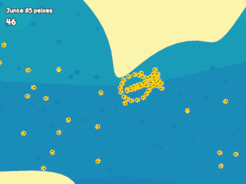
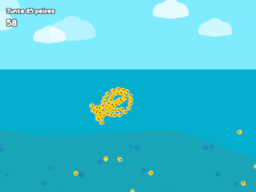
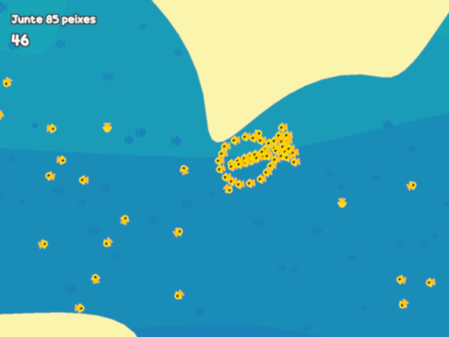
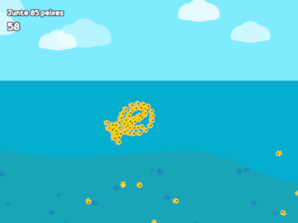

About me
Hello there! My name is Denilson and I'm a 17 years old boy who enjoys coding, playing some games and helping people.
As a kid my favorite things to do were drawing, watching TV and playing with building blocks and cardboard; I loved how I could create almost anything I could think of with them.
I lived most of my childhood in the countryside and in my first interactions with technology I was fascinated by just how magical it felt. I was used to watching cartoons and movies on a tube TV, but things like being able to talk to someone from another city in real time using a device so (relatively) small were just mind-blowing for me at the time.
I'm glad that I have the chance to explore this weird, yet fantastic, tech world and study the ins and outs of how things work, even being able to create my own video games and websites (as you can see XD).
The things I like doing the most are walking in the woods (to get that good ol' vitamin D and fresh air), learning new things and creating stuff.
My games

Gear Loop
A short parkour-platformer game that tests your limits.
This was made in less than a week for the Brackeys Game Jam 2023.1, and of the 735 games submitted to this jam, Gear Loop ranked 73rd!
The feedback on this game was so positive that I'm going to remake it and turn it into a fully fledged game. If you're a fast runner, keep an eye out!
Dancing Sub Zero
One of my coolest Scratch games!
I created this when I was just 12 (I feel old now XD) and named it Dancing "Sub Zero" because at the time I was really into Geometry Dash SubZero.
Afterwards I made a remastered version with better animations, menus and a list of songs you can choose from, but the first version feels more nostalgic and "legit" to me.
 



Le Fish
A brief history of a fish who walks (swims) the path of revenge.
The main mechanic of this game is recruiting other fish to help you defeat the protagonist's archenemy. As you recruit more fish, they swim in a formation that makes them look like one big fish.
Differently from the other jams I've partaken so far, this was a national game jam (from Brazil) and out of the 304 games submitted, this game made it into a livestream showcasing the top 50 games!
You can go to my Itch.io page if you want to see my most recently published games, or head on to my Scratch profile to check out my older Scratch projects!